A sankey is a stacked area chart whose stacks are nodes. Each ribbon end
is a data row, the ends stack inside their node with the ordinary
stack operator, and the ribbon stays one-to-one.
stack, spread and
ribbon.
unpivot data helper,
ribbon({ by }) to name which rows form one ribbon, and, for
chord diagrams, ribbon({ at }) to say which part of a node
each end attaches to.
ribbon({ from, to, size }). It wins if ribbons
over independently placed nodes become a priority.
stack, so it desugars into the existing core,
keeps one stacking mechanism, and realizes the direction recorded in #745:
ribbons one-to-one per row, plus per-edge span allocation.
top, right, bottom,
left. The coordinate transform carries parts along, so a
polar rect's bottom is its inner arc. Same word as in the
label proposal.
source and
target becomes two rows with a side column. The
polars name; dplyr says pivot_longer.
| From the notes | Answer |
|---|---|
| Extend the existing ribbon API? |
Yes, by two options: by (which rows form one ribbon)
and at (which part each end attaches to). The span
allocation itself does not live on the ribbon.
|
The stack operator, or a method like
ribbon().stack()?
|
The stack operator, applied to the ends inside each
node. ribbon().stack() is Approach C below: it would be
a second route to stacking next to the flow's stack,
which matches the #290 note that a mark-side stack on a connector
can only respell a row stack.
|
| What do enclose, line, cut and labels contribute? |
line: the same ends give parallel coordinates and
stringlines. enclose: draws a node box when in-sum
and out-sum differ (Shape.box(), padding 0).
cut: another way to make ends when the node is one
drawn shape such as an image; for a rect it equals stacking the
ends. labels: node labels are
.label() on the node tier, ribbon labels are
Place.along, and at reuses the label
proposal's part names.
|
| One-to-many, many-to-many? | Ribbons stay one-to-one per link. Splits and merges come from several ends stacking in one node. The energy sankey (69 links, splits and merges) renders this way. |
A ribbon spans the full facing edge of each operand's box. No option attaches it to part of an edge, so every divided-end example builds one node per end and lists ribbons by name. The gallery Sankey Tree is about 137 lines for this reason.
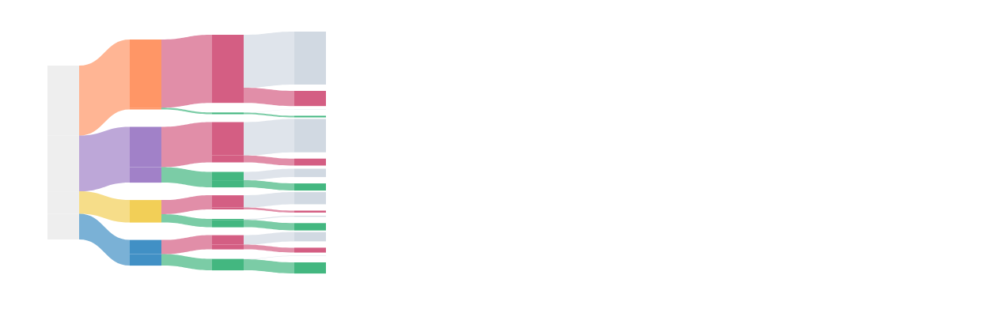
.relate.
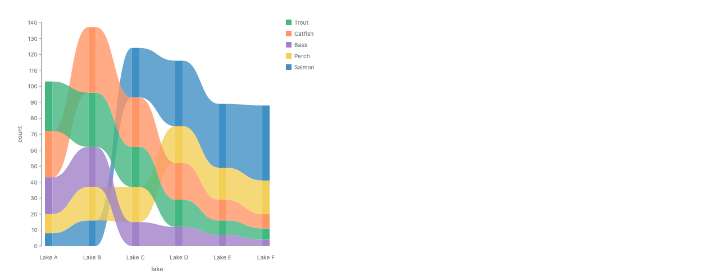
Every system that draws sankeys correctly stacks link values inside each node and then joins two intervals. The one general grammar without ends, Mascot, attaches every link at its node's middle and gets a thick-edged node-link diagram instead.
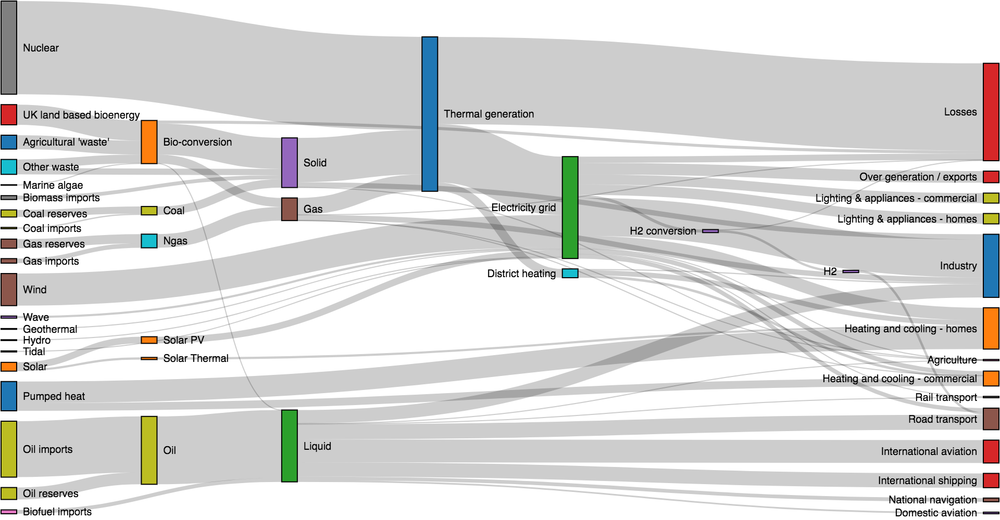
One layout computes columns, node y, and each link's
y0/y1 on both edges.
d3.sankey().nodeAlign(d3.sankeyJustify)
.nodePadding(10).linkSort(null)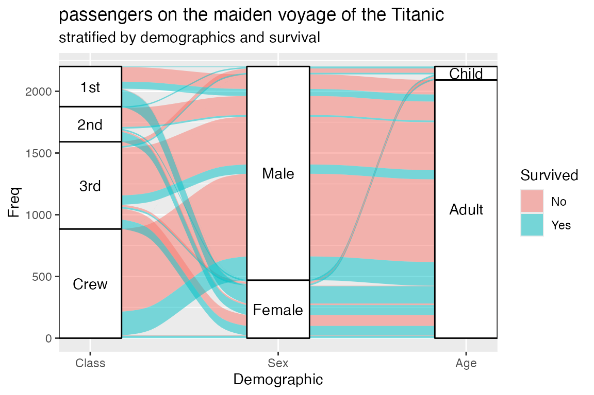
Long "lodes form": one row per (cohort, axis).
geom_alluvium keeps order through every axis;
geom_flow reorders per gap.
geom_alluvium(aes(fill = Survived))
geom_stratum() # lode.guidance, aes.bind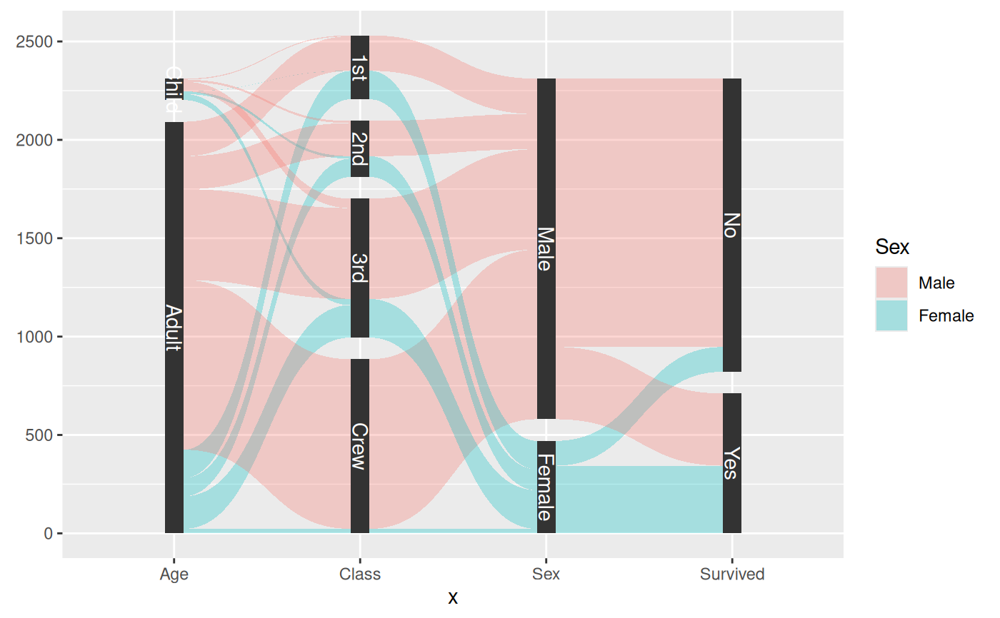
gather_set_data makes long data. One gap, one curvature.
geom_parallel_sets(aes(fill = Sex),
sep = 0.05, strength = 0.5)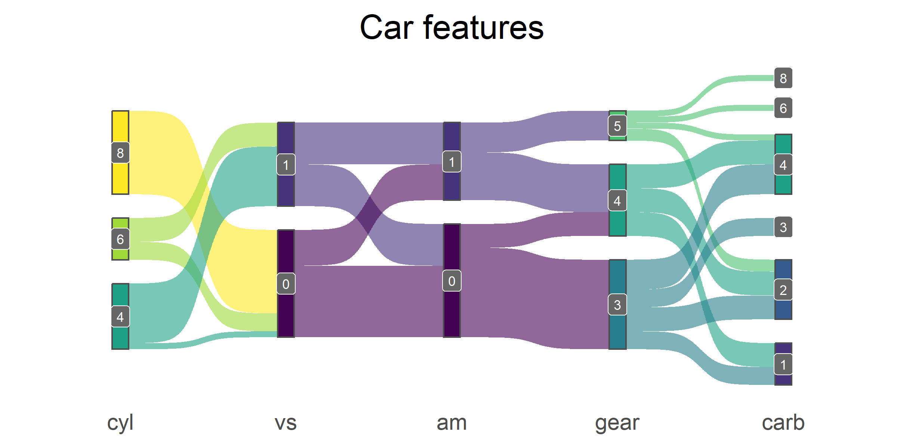
make_long gives one row per edge. Sankey and alluvial
differ only by gap and baseline.
make_long(cyl, vs, am, gear, carb)
geom_sankey(flow.alpha = .6, space = 10)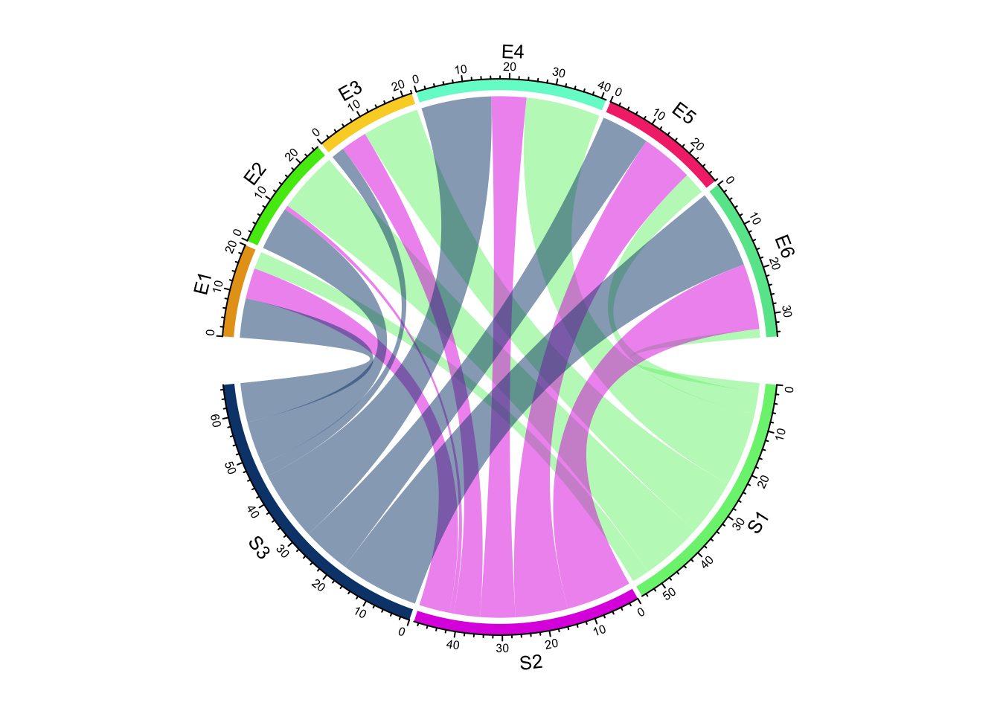
Sectors sized by total; links stacked in sectors. d3's
ribbon() joins two angle intervals through the center.
chordDiagram(mat, link.sort = TRUE)
d3.chord().padAngle(.05).sortSubgroups(..)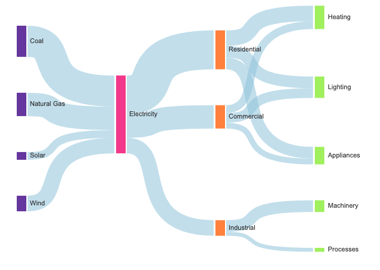
No end concept: every link leaves its node's middle, so widths pile up instead of tiling the edge.
sourceAnchor: ["right", "middle"]
encode(link, "strokeWidth", "value")
Also surveyed: TikZ sankey (\sankeyfork{a}{25/b,10/c}
divides a cross-section into sub-intervals that must sum to the parent, the
closest model to this proposal), the Kibana Vega sankey (stack + lookup +
linkpath, with node and slot stacks kept in sync only by a shared sort key),
ELK port constraints (a ladder of who owns end order), Plotly, Highcharts,
ECharts, networkD3, RAWGraphs, Kosara's Parallel Sets. Fixed chart types
such as geom_sankey and go.Sankey are foils: they
list arrangements instead of composing them.
const ends = unpivotEnds(sorted, ["class", "sex", "survived"], "count"); // hand JS + rank key
layer([
chart(ends)
.flow(
spread({ by: "axis", dir: "x", spacing: 120 }),
spread({ by: field("category").sort(), dir: "y", spacing: 12 }),
spread({ by: field("rank").sort(), dir: "y", spacing: 0, axes: false })
)
.mark(rect({ w: 12, h: "value", fill: "class" }).name("ends")),
chart(selectAll("ends")).flow(group({ by: "path" }))
.mark(ribbon({ opacity: 0.6, fill: "class" })),
])chart(titanic)
.flow(
derive(unpivot({ on: ["class", "sex", "survived"],
variable: "axis", value: "category", id: "path" })),
spread({ by: "axis", dir: "x", spacing: 120 }),
spread({ by: field("category").sort(), dir: "y", spacing: 12 }),
stack({ by: field("rank").sort(), dir: "y" }) // end order: decision 4
)
.mark(rect({ w: 12, h: "count", fill: "class" }))
.layer(ribbon({ by: "path", opacity: 0.6 }))(chart(titanic)
.flow(derive(unpivot(on=["class", "sex", "survived"],
variable="axis", value="category", id="path")),
spread(by="axis", dir="x", spacing=120),
spread(by=field("category").sort(), dir="y", spacing=12),
stack(by=field("rank").sort(), dir="y"))
.mark(rect(w=12, h="count", fill="class"))
.layer(ribbon(by="path", opacity=0.6)))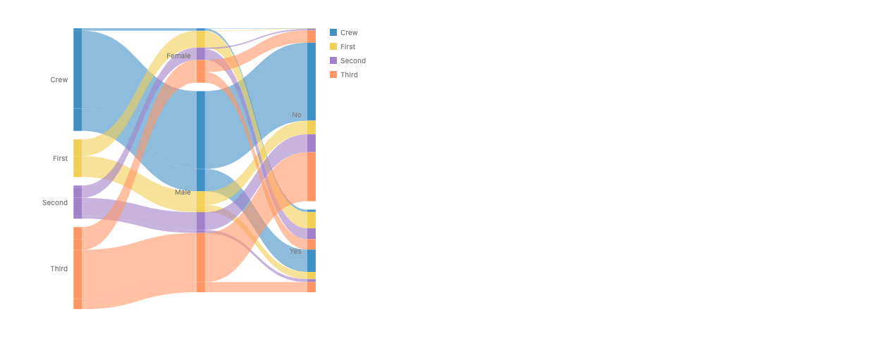
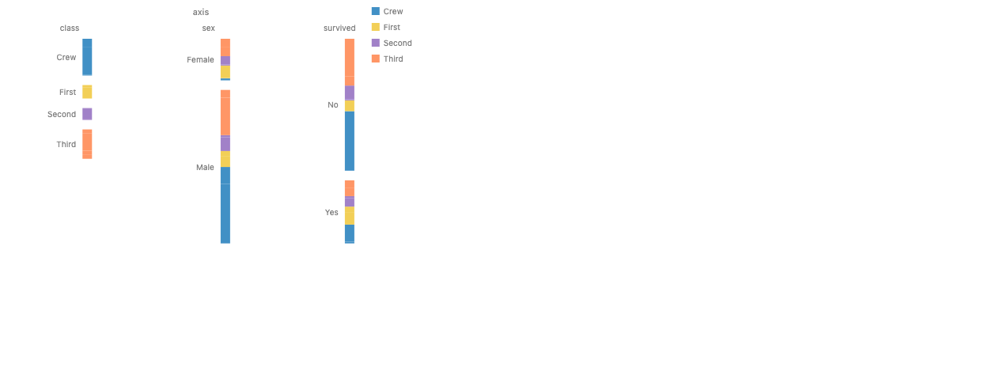
.layer(ribbon()): the #786 rule splits by every non-path
tier, and the category key changes along a path, so no ribbon has two
ends. Hence by.
chart(links) // { source, target, value } + precomputed depth and order
.flow(
derive(unpivot({ on: ["source", "target"],
variable: "side", value: "node", id: "link" })),
spread({ by: field("depth").sort(), dir: "x", spacing: 100 }),
spread({ by: field("node").sort(order), dir: "y", spacing: 10 }),
spread({ by: field("side").sort(["target", "source"]),
dir: "x", spacing: 0 }), // in-ends left, out-ends right
stack({ by: field("key").sort(), dir: "y" }) // far node's rank
)
.mark(rect({ w: 6, h: "value", fill: "#555" }))
.layer(ribbon({ by: "link", opacity: 0.4, fill: "source" }))
A node is its two end stacks side by side, so its height is the larger
of its in-sum and out-sum. The side spread's
alignment places the slack (TikZ's left/center/right
anchor). enclose({ shape: Shape.box(), padding: 0 }) over
each node's ends draws a box.
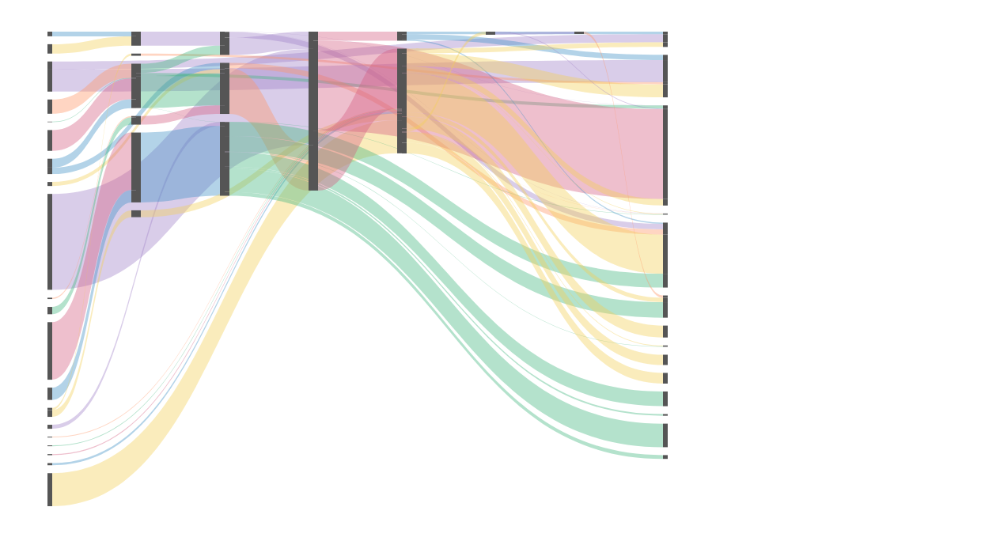
chart(treeEnds) // one row per (leaf, depth), blank keys for missing levels
.flow(
spread({ by: "depth", dir: "x", spacing: 64, alignment: "middle" }),
spread({ by: "class", dir: "y", spacing: 8 }),
spread({ by: field("sub").sort(), dir: "y", spacing: 4 }),
spread({ by: field("leaf").sort(), dir: "y", spacing: 2 }),
stack({ by: field("rank").sort(), dir: "y" })
)
.mark(rect({ w: 40, h: "value", fill: "class" }))
.layer(ribbon({ by: "path", opacity: 0.6, curve: Curve.bezier() }))
About 35 lines against 137 today. Nested gaps are nested
spreads because each end row carries its ancestors' keys.
unpivot does not make the tree shape (one row per depth
with blank keys), so a tree-ends helper is open (decision 8, #738).
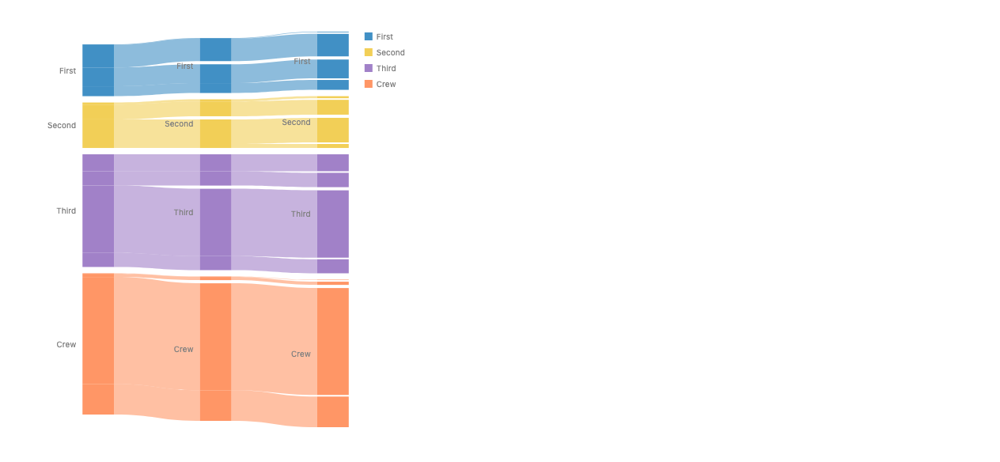
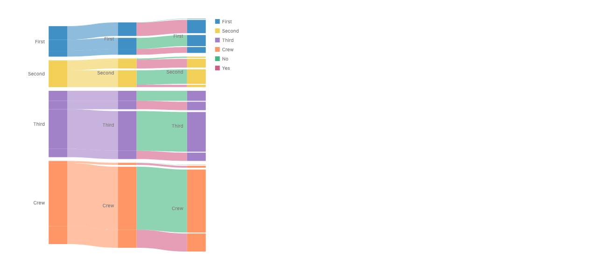
layer({ coord: Coord.clock() }, [
chart(cells) // { group, other, value, chord: sorted pair, color }
.flow(
spread({ by: field("group").sort(names), dir: "x", spacing: 0.04, y: 160, h: 16 }),
stack({ by: field("other").sort(names), dir: "x" })
)
.mark(rect({ w: "value", fill: "group" }))
.layer(ribbon({ by: "chord", at: "bottom", fill: "color", opacity: 0.67 })),
])layer([
chart(cells)
.flow(spread(by=field("group").sort(names), dir="x", spacing=0.04, y=160, h=16),
stack(by=field("other").sort(names), dir="x"))
.mark(rect(w="value", fill="group"))
.layer(ribbon(by="chord", at="bottom", fill="color", opacity=0.67)),
], coord=Coord.clock())
Each matrix cell is already an end. at: "bottom" attaches
both ends to their inner arc. The band leaves each end along that part's
outward normal, in screen space. The same rule describes today's sankey
bezier (out of right along +x, into left along
−x), so chords need no new curve. In Cartesian coordinates it gives
thick arc-diagram bands.
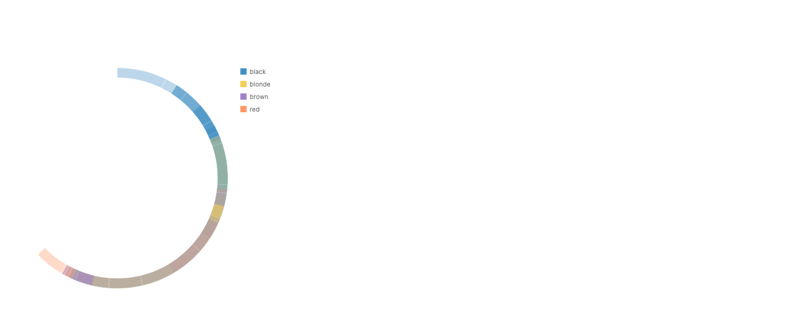
dir, so bands hug the ring.
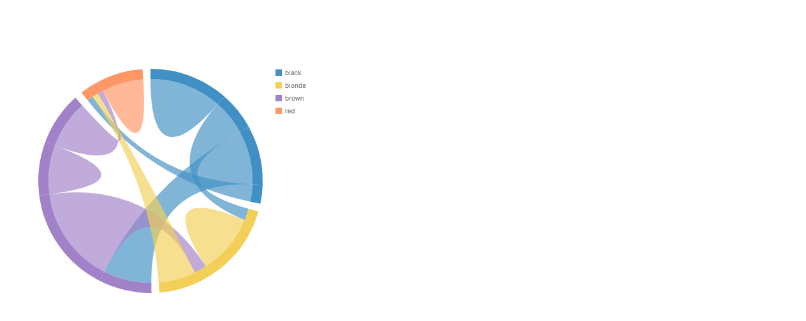
unpivot is a derive data helper.by, at are ribbon options.stack. Node and ribbon share one scale
by construction, since the ends are the node.
at exists.line({ by }) over the same ends gives parallel
coordinates.
stack.
by overrides it only
when named.
unpivot, by, at, all
existing words.
size divides each node's facing
part.
layer([
chart(nodes)
.flow(spread({ by: "depth", dir: "x", spacing: 100 }),
spread({ by: "name", dir: "y", spacing: 10 }))
.mark(rect({ w: 12, h: "value" }).name("nodes")),
chart(links)
.flow(resolve(["source", "target"], { from: selectAll("nodes") }))
.mark(ribbon({ from: "source", to: "target", size: "value", opacity: 0.5 })),
])layer([
chart(nodes).flow(spread(by="depth", dir="x", spacing=100),
spread(by="name", dir="y", spacing=10))
.mark(rect(w=12, h="value").name("nodes")),
chart(links).flow(resolve(["source", "target"], from_=select_all("nodes")))
.mark(ribbon(from_="source", to="target", size="value", opacity=0.5)),
])
Desugars into a fresh stack of ends per (node, part),
placed with relate() and
Constraint.align span, then one-to-one ribbons. End order
is a sort after the nodes are placed, by the far end's position.
New: a data channel on a connector that must share the
node's scale (same measure), a post-layout sort, a loud error when
ribbon sizes exceed the node, and at.
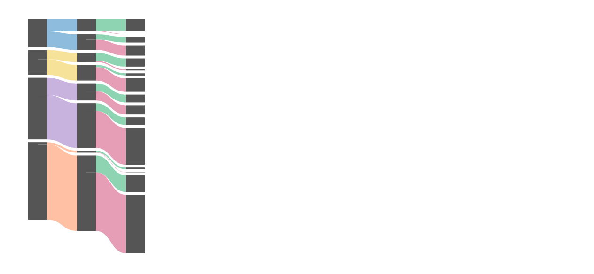
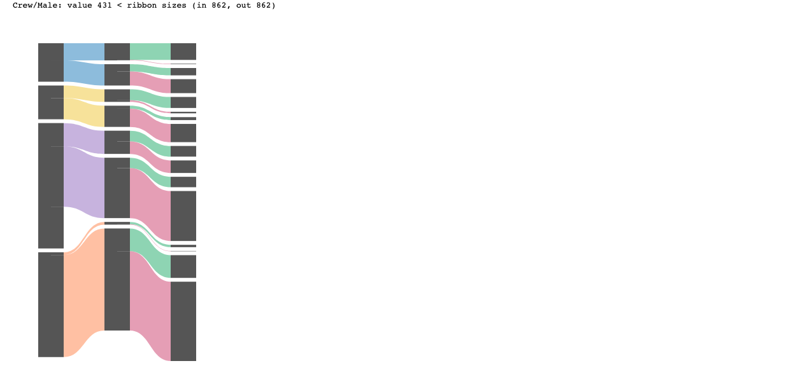
relate + stack + ribbon.
Otherwise a second stacking mechanism next to stack.
ribbon().stack()position = "stack":
ribbons that share a node stack their ends there.
// sankey
chart(links)
.flow(resolve(["source", "target"], { from: selectAll("nodes") }))
.mark(ribbon({ from: "source", to: "target" }).stack({ size: "value" }))
// and stacked area would gain a second spelling
chart(rows).flow(scatter({ by: "year", x: "year" }))
.mark(ribbon({ h: "value" }).stack({ by: "series" }))
Its sankey meaning is exactly A's, so C is A with a method spelling. It
also gives stacked area a second route next to
spread(x), stack(series), which is a large partial overlap
with the flow's stack. By the calls, methods and options
rule, a method reads its caller's state; this one reads every other
ribbon at the same node, which is a set-level operation. No separate
pictures: the outputs are A's and today's stacked area.
stack; A and C add a second
stacker unless defined by rewrite.
unpivot from polars,
by the family key, at and part names from the
label proposal. Same shape in JS and Python.
What would change the pick to A: ribbons over nodes placed by something other than the flow (gotree trees, node-link diagrams, flow maps) becoming a priority, or crossing-reducing end order proving impossible to state as a data sort. A can later be added as sugar defined by rewrite into B's pieces, so picking B does not close it off.
Out of scope: sankey node layout (column assignment, in-column relaxation; #701, #631) and fill-the-height gaps (#1165). Both showed up in the energy prototype; neither is about divided ends.
stack (B), rather than by the ribbon (A)?
by back on ribbon and
line as the ribbon's identity (ribbon({ by: "link" })), with travel order from the outermost tier?
unpivot({ on, variable, value, id }) inside
derive: keep the polars name, and create the row id in the
same call rather than a separate withRowIndex step?
ribbon({ at: "bottom" }) with the label proposal's part
names, plus the rule that a ribbon leaves each end along that part's
outward normal in screen space?
alignment
start (as d3) or middle?
| New spelling | Meaning |
|---|---|
derive(unpivot({ on, variable, value, id }))unpivot(on=..., variable=..., value=..., id=...)
|
Columns to rows, keeping a row id that names the path or link. |
ribbon({ by }), line({ by }) |
Rows that share the key form one ribbon. Removed in #786; returns with this narrower meaning. |
ribbon({ at: "bottom" }) or
{ at: { from, to } }
|
The part each end attaches to. Default is today's facing edges along
dir.
|
stack under two spreads gets its
own scale per column when columns have different child counts (workaround:
spread({ spacing: 0 })).
spread orders groups top-down; a y
stack orders them bottom-up.
filter over a refs bag sees ref.datum as a bag,
so r.datum.depth is undefined and everything is silently
dropped.
spread with spacing stops near 225°
instead of closing the circle.
chart(..., { legend: false }) on a non-root layer is ignored.
connect and tween as
relational leaves (a hard-coded type list).
resolveGroupPaint resolves
fill: "<field>" only for registered types.
Repo copy: proposals/stacked-ribbons/proposal.md on branch
worktree-stacked-ribbons-proposal. Prototype stories:
packages/gofish-graphics/stories/_proposals/stacked-ribbons/.
Every spec and workaround: proposals/stacked-ribbons/NOTES.md.